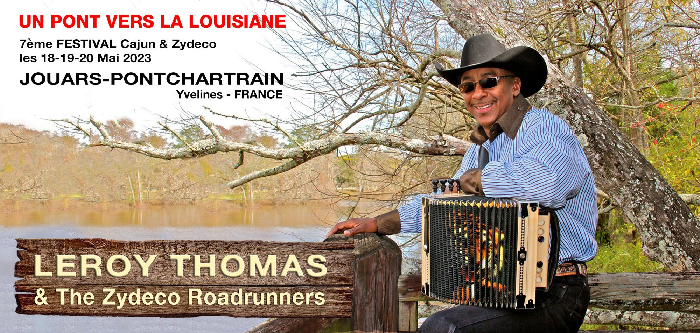
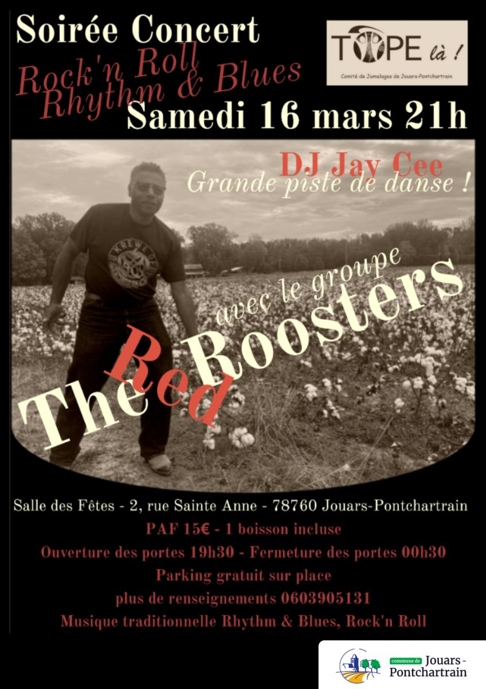
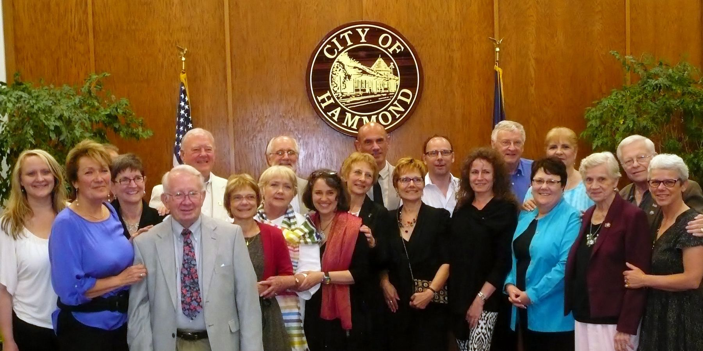
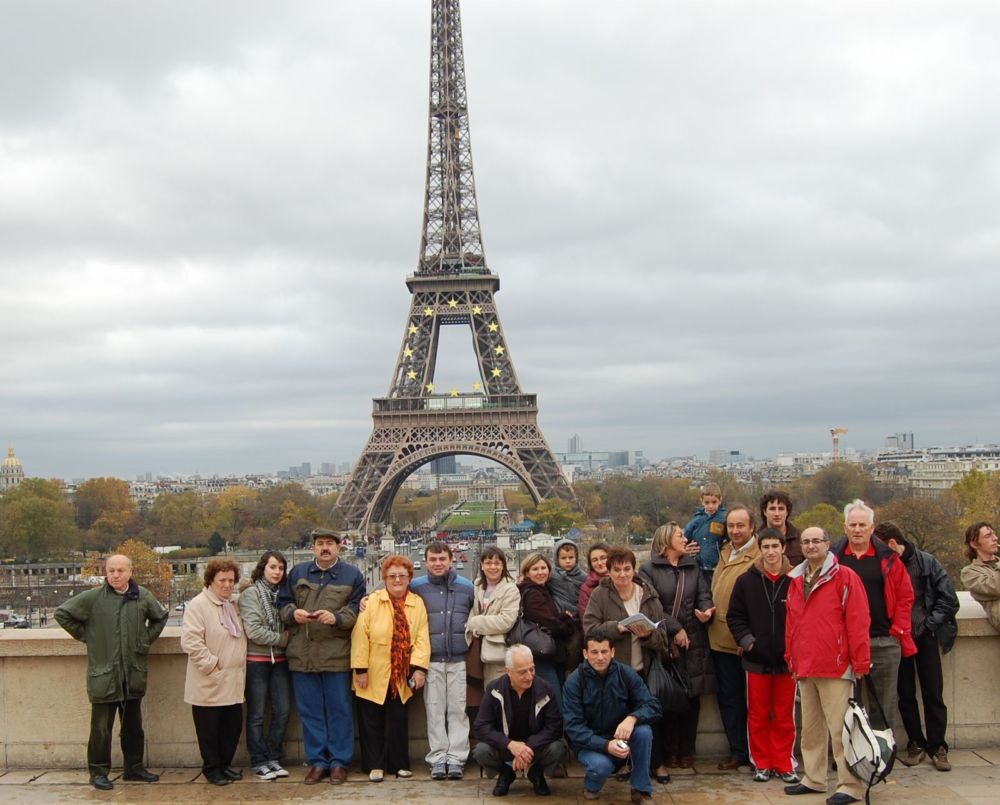
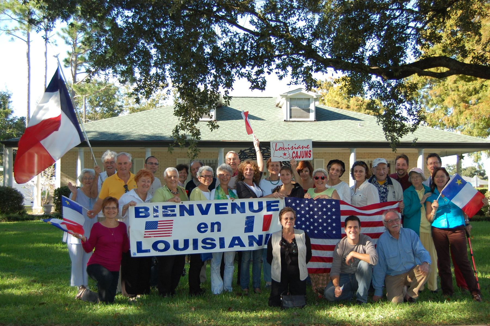

🤝
L'association
Notre histoire, nos valeurs, nos villes jumelles et le sens du nom « Tope là ! ».
DécouvrirUn pont vers la Louisiane : on se serre la main, on danse, on fait la fête.
Comité de jumelages de Jouars-Pontchartrain (Yvelines), Tope Là ! organise le festival Cajun & Zydeco, des soirées, des voyages et des échanges d'amitié avec Hammond (Louisiane) et Cella (Espagne).
Notre histoire, nos valeurs, nos villes jumelles et le sens du nom « Tope là ! ».
DécouvrirFestival, soirées Louisiane, loto, cabaret, voyages et échanges avec les jeunes.
ExplorerLes prochains rendez-vous et toutes les éditions passées.
Voir les datesAffiches et souvenirs classés par événement, de Hammond à Cella.
Feuilleter




Adhérent, bénévole ou simple curieux : il y a toujours une place à notre table.